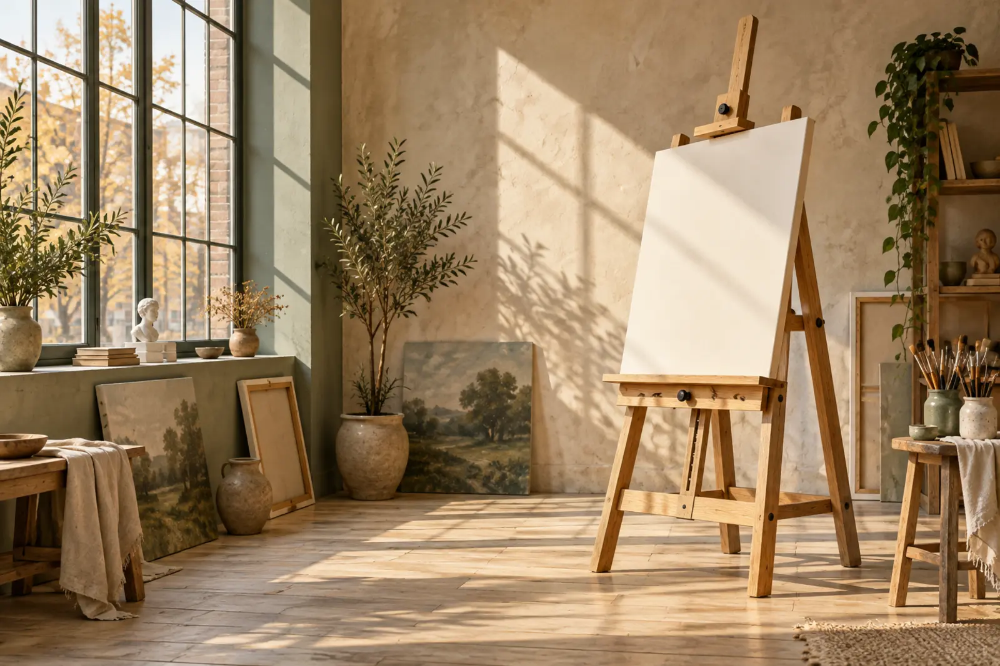
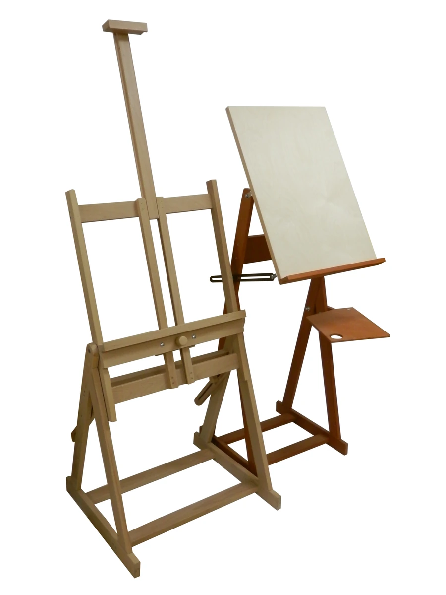
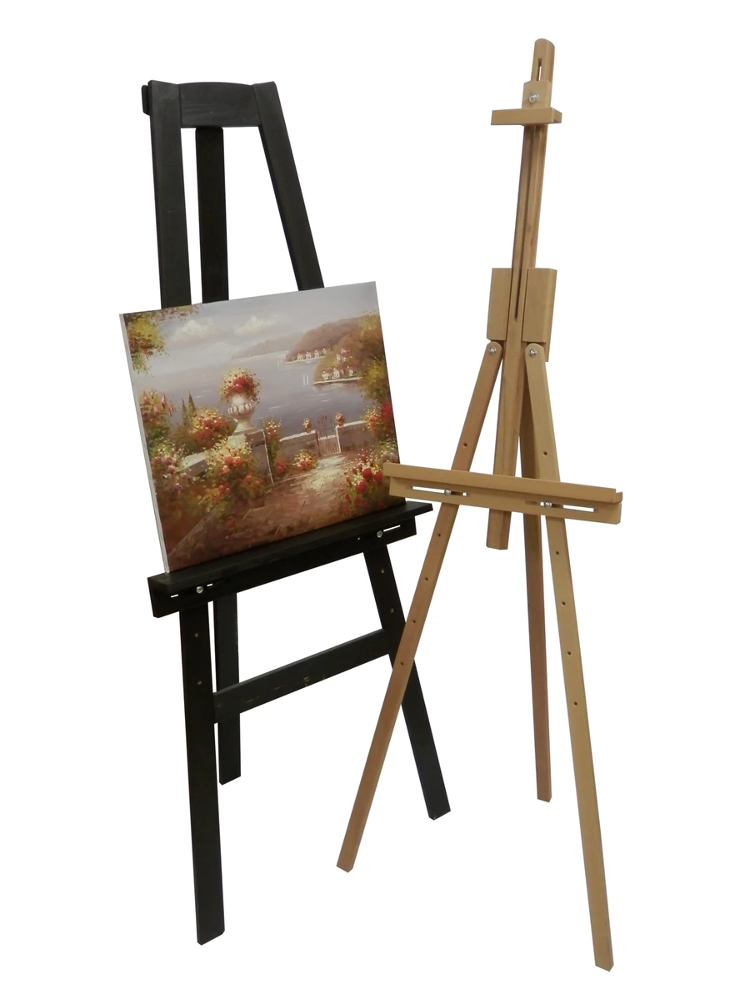
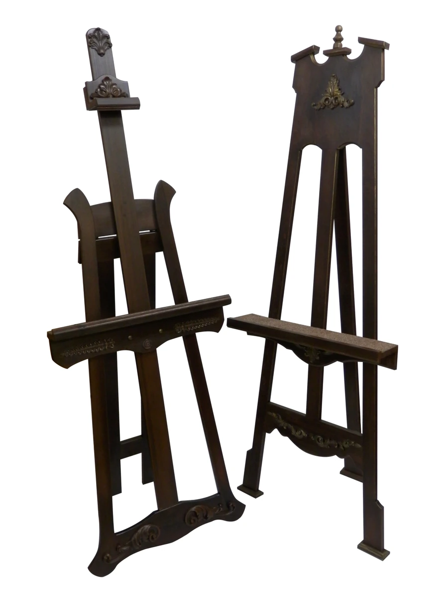
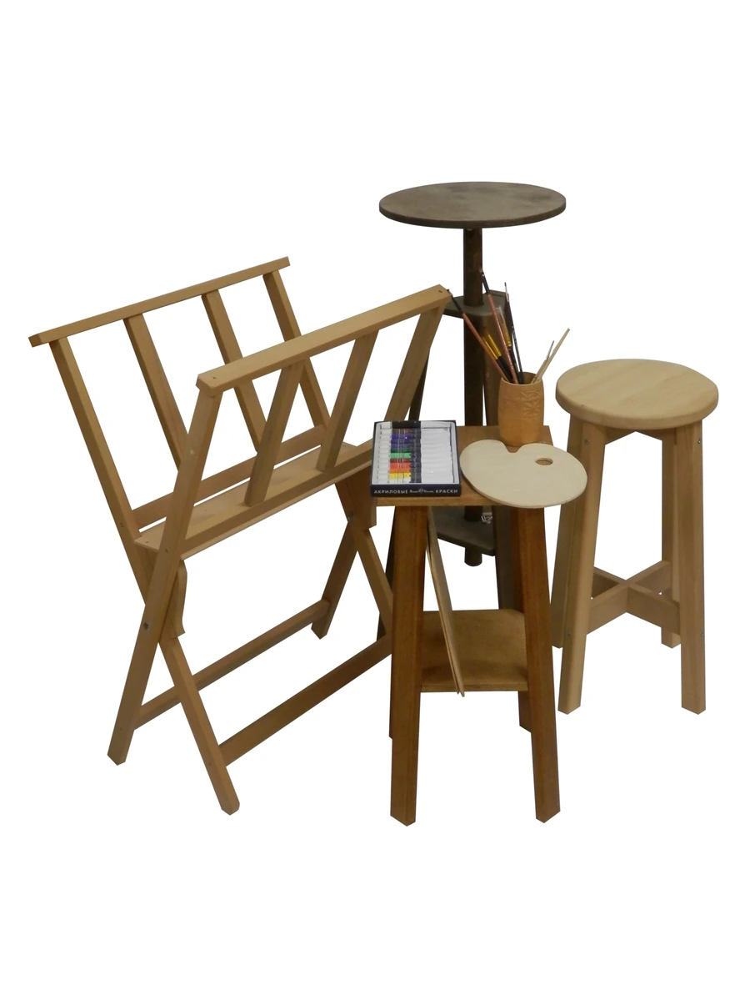
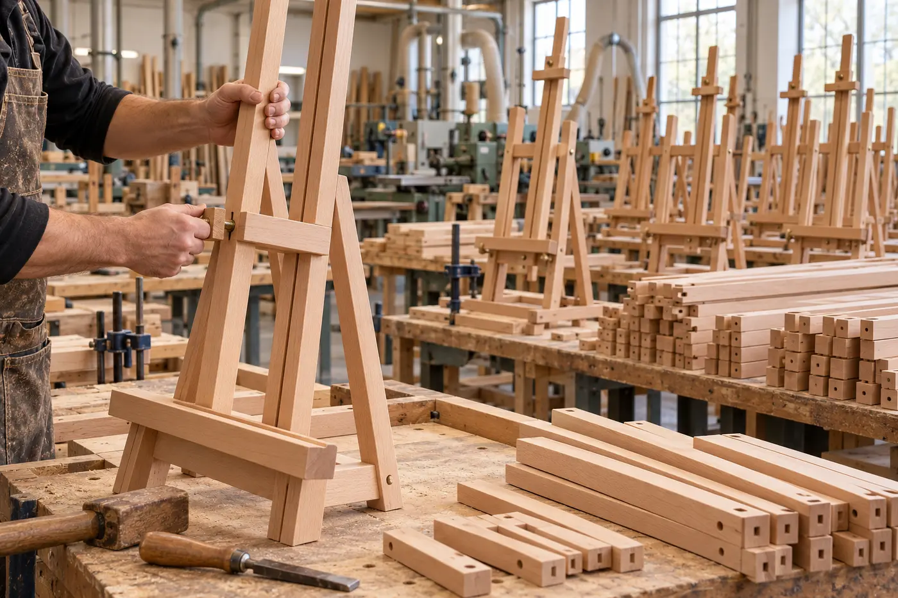
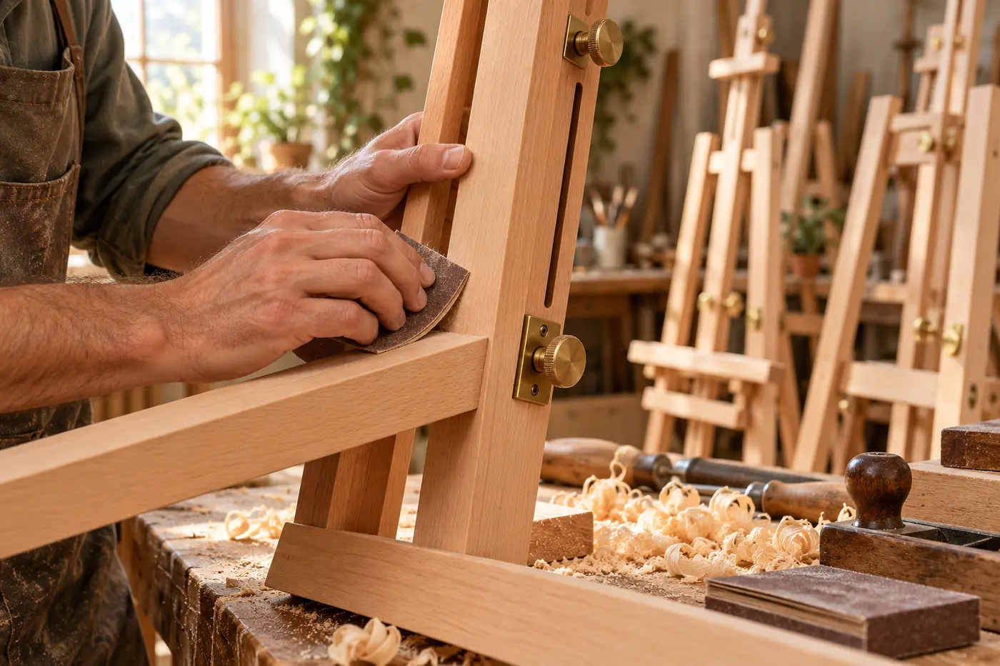
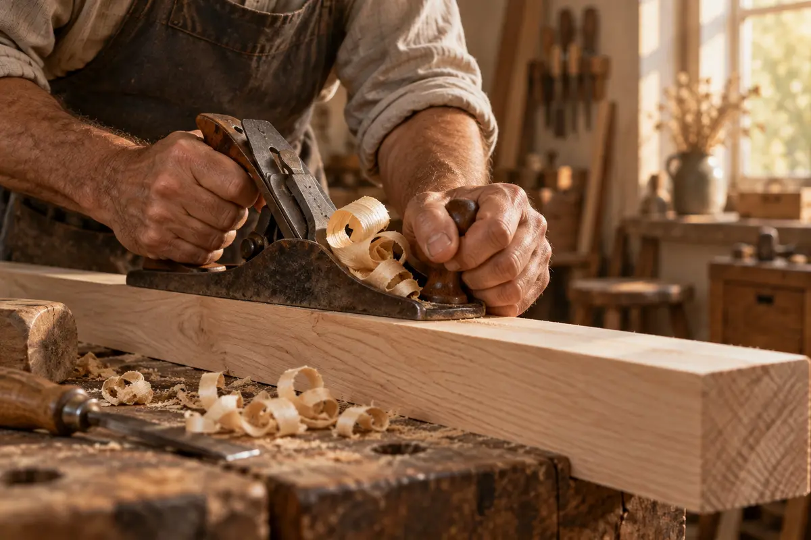

Для художников
Когда важны удобная высота холста, устойчивость и свободное движение кисти.
Подобрать решениеСоздаём мольберты и оборудование для художников, студий и тех, кто учит видеть прекрасное.
Паспорт с гарантийным сроком, инструкция по сборке и крепёж — в комплекте.

Сделано для долгой творческой жизниОдна мастерская — целый мир возможностей — Оптовые партии для организаций

Для этюдов, рисунка и живописи
Смотреть
Чертить, рисовать и хранить материалы
Смотреть
Показывайте работы красиво
Смотреть
Искусство в повседневной жизни
Смотреть
Всё для пространства творчества
СмотретьКогда важны удобная высота холста, устойчивость и свободное движение кисти.
Подобрать решениеКогда каждому ученику нужно своё продуманное рабочее место.
Подобрать решениеКогда нужно представить работы или собрать партию оборудования.
Подобрать решениеКогда требуется партия оборудования для комплектации поставки. Обсудим состав, количество и условия заказа.
Подобрать решениеДля кого мольберт, какой формат и сколько рабочих мест.
Обсудим древесину, размеры и нужные дополнения.
Уточним комплектацию, стоимость и срок изготовления.
Изготовим и согласуем получение готового оборудования.



На собственном производстве соединяем классические столярные приёмы и машинную обработку. Финальные детали проходят ручную доводку.
Мольберты и мебель нашего производства помогают организовать учебную, выставочную и личную работу.
Массив древесины камерной сушки, шпон и фанера.
Столярная практика и профессиональное обучение мастеров.
Выбор конструкции, формата и дополнительных элементов.
Оптовые поставки оборудования для учебных классов и студий.
Все изделия выпускаются в соответствии с ТУ 32.99.16-001-0115936521-2020 и ГОСТ 16371-2014. К каждому изделию прилагаются паспорт с указанием гарантийного срока, инструкция по сборке и необходимый комплект крепежа.
Собираете оборудование для учебного заведения или выставки? Пришлите список изделий или эскиз — обсудим изготовление и комплектацию.
Коллектив мастерской принимал участие в реализации Германо-Российского модельного проекта «Развитие ремесел в России путем профессионального образования». В рамках проекта (1993-1999 года), сотрудники проходили стажировки в Федеративной Республике Германия (учебный центр «Глоккеншпитц», город Крефельд, Северный Рейн-Вестфалия).
Результатом обучения и успешной работы стало получение диплома «Мастера столяра-ремесленника города Москвы», выданного Палатой Ремесел города Москвы (Распоряжение Департамента поддержки и развития малого предпринимательства №15 от 16.06.2003).
Коллектив мастерской долгое время работал на производственной базе Профессионального Лицея Ремесленников №331. Параллельно производственной деятельности осуществлялась подготовка кадров по немецким образовательным стандартам. Итогом успешной педагогической деятельности явилось получение Диплома Лауреата премии города Москвы в области образования.
Мастерская Иванова Д. В. работает только по классическим технологиям деревообработки с натуральными материалами (массивная древесина камерной сушки, шпон ценных пород, фанера). Наш девиз — «Тщательная работа над каждой деталью». Применяя передовые методы машинной обработки древесины, мастера уделяют много времени ручной обработке, благодаря чему изделия получают качественную завершенность, теплоту, органичность.
Нашу продукцию Вы можете увидеть во многих учебных заведениях Российской Федерации, Москвы, музеях, торговых центрах и выставочных залах.
Если Вы — начинающий художник или хотите сделать подарок своим друзьям или близким, прочитайте это краткое руководство по выбору мольберта.
Посмотрите модели и цены, чтобы собрать список оборудования для мастерской или учебного класса.
Открыть прайс-лист Документ откроется в Google DriveПосмотреть цены на сайтеСертификат добровольного соответствия на изделия из древесины и древесных материалов.
Срок по документу:
09.04.2025 — 08.04.2028
Работаем с университетами, художественными школами, музеями и организациями из разных городов России.
Три концепции оснащения: от учебного класса до камерной галереи.
Школа искусств «Палитра»
Концепция оснащения учебного кабинета: складные хлопушки, рабочие табуреты и место для натюрмортной постановки.
Галерея «Тихий свет»
Концепция камерной выставки: отдельные опоры для картин, свободные проходы и спокойная композиция зала.
Арт-студия «Линия»
Концепция студии для взрослых: устойчивые станковые мольберты, рабочие поверхности и хранение принадлежностей.
Названия объектов и изображения придуманы для этого варианта сайта. Это примеры решений, а не выполненные заказы.
Художественные школы, частные студии и галереи — пространства, для которых создаётся наше оборудование.
Концепция блока партнёров. Представлены вымышленные организации и визуализации, а не список реальных клиентов.

Как выбрать конструкцию под свою технику, формат и привычку работать сидя или стоя.
Читать статью
Зачем художнику мольберт и как устроены станковые модели, треноги, «Лира» и хлопушки.
Читать статью
От багетной мастерской и выставочного зала до кафе, аукциона и современного дома.
Читать статью
Первые заказы, ремесленное обучение и развитие производства в рассказе основателя мастерской.
Читать статьюНачните с максимального формата холста или планшета и удобного положения — стоя или сидя. В карточках указаны габариты, а предельный формат можно уточнить при подборе.
Принимаем размерные эскизы и описания задач. Возможность изготовления, материалы и стоимость согласуются индивидуально.
Да, поставляем оборудование организациям оптом и в розницу. Пришлите перечень оборудования и количество — обсудим условия партии.
Выберите комплектацию и количество в карточке изделия — стоимость рассчитывается автоматически. Подтвердим наличие и сроки изготовления на производстве.
Расскажите о пространстве, формате и задачах.
Вместе найдём подходящее решение.
Московская область, г. Мытищи,
Проектируемый проезд 4530, строение 2.
Завод «СпецМашМонтаж».
Перед визитом согласуйте время по телефону.
Построить маршрут")
")

")